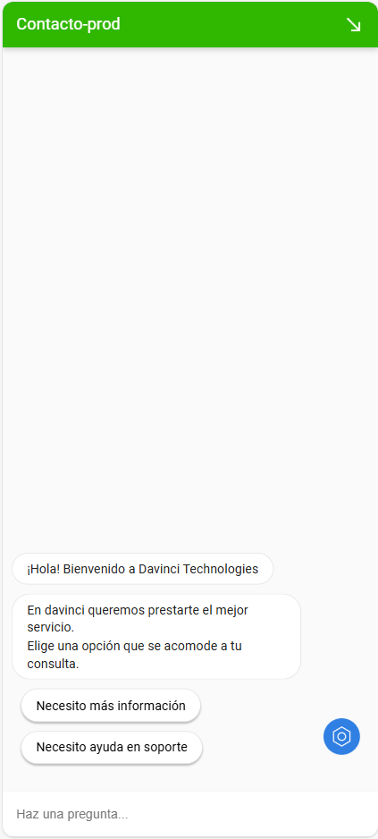

Davinci Techonologies
Sitio web - Blog - SEO Accede al sitio
Accede al sitio
Overview
El sitio web de Davinci Technologies, destacando su enfoque en la transformación digital mediante una estructura clara que resalta sus pilares y certificaciones. El diseño accesible y fluido refuerza su misión de empoderar organizaciones con tecnología avanzada.
Tecnologías usadas
Diseñada como tipo de contenido personalizado, es una renovación de las páginas de producto de la empresa, donde se buscó mejorar el posicionamiento SEO así como la información presentada al cliente. Mejoró el posicionamiento en un 50%

Sección creada y diseñada para hacer atractiva y amena la lectura de contenidos relacionados con la tecnología y la transformación digital. +10 páginas posicionadas en la primera página de Google

Espacios interactivos donde conocer las principales funciones del producto y casos de éxito de una manera interactiva, llamativa y fácil de leer.
Chatbot creado para recibir leads y casos de soporte directamente en la página. Creado en Dialogflow con integración de funciones como actualización de hojas de cálculo con nuevos leads y envío de correos con Nodemailer.